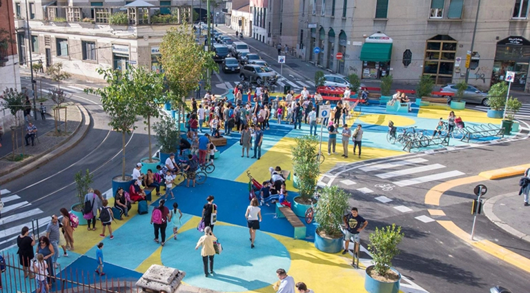

Тактический урбанизм
искусство преобразования городов
Что же такое тактический урбанизм?
Тактический урбанизм — это быстрые и дешёвые временные изменения городского пространства. Вместо долгих проектов активисты с помощью краски, цветочных кадок и уличной мебели сразу создают прототипы будущих скверов, велодорожек или пешеходных зон.
Его цель — наглядно показать, как может выглядеть и работать обновлённое пространство, вовлечь жителей и провести «полевое испытание» идеи перед большими вложениями. Это снижает риски, оживляет пустыри и делает города более человекоориентированными.
Готовые проекты
Местные группы часто превращают уличные парковки или пустыри в мини-парки во время таких мероприятий, как День парковки (Park(ing) Day) , когда волонтеры высаживают сады и устанавливают скамейки на парковочных местах.
Миланская программа «Piazze Aperte» является ярким примером: начиная с 2018 года город запросил десятки предложений граждан по преобразованию асфальтированных площадей в общественные площади. Используя только краску, модульную мебель и кашпо на экспериментальной основе, чиновники проверили 38 мест.
Преимущества городского ремонта
Низкая стоимость
Проекты требуют минимальных инвестиций по сравнению с традиционными подходами к городскому планированию.
Быстрая реализация
Изменения могут быть осуществлены в кратчайшие сроки, иногда всего за несколько дней.
Вовлечение сообщества
Жители активно участвуют в преобразовании своих районов, что укрепляет местное сообщество.
Экспериментальный подход
Позволяет тестировать решения перед масштабными инвестициями в постоянную инфраструктуру.